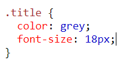
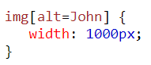

Dada esta regla CSS
- ¿Qué tipo de selector CSS es? Respuesta: Es un selector de clase.
- ¿Cuantas propiedades CSS establece este selector? Respuesta: Establece 2 propiedades: el color del texto y el tamaño de la fuente.
- ¿Cuál es el valor de la segunda propiedad? Respuesta: El valor de la segunda propiedad es de 18 píxeles.
Analiza el siguiente tag img

- ¿Cuantos atributos tiene este tag? Respuesta: Tiene 3 atributos.
- ¿Cuál es el valor del atributo src? Respuesta: Se trata de una URL, en este caso relativa.
- Imagina que tenemos la siguiente reglas CSS. ¿Crees que el tamaño de la imagen sería de 1000px? ¿Por qué? 
Respuesta: El tamaño de la imagen podría ser de 1000px siempre que no existiera una regla CSS que limitara su tamaño máximo a menos de 1000px, como por ejemplo max-width: 999px (o menos), o que el ancho natural de la imagen sea menor a 1000px y tenga la propiedad max-width: 100%.
¿Cuál es el valor de la propiedad font-weight de este botón?
Respuesta: El valor es "normal".